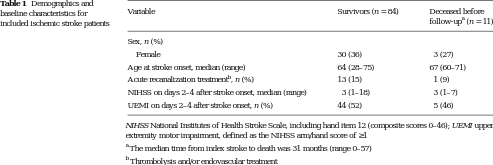

<?xml version="1.0" encoding="UTF-8"?>
<table title="table1" id="table1" class="tabcontent" xmlns="http://www.w3.org/1999/xhtml">
 <tr>
  <td>
   
   <p>corpus-oa-validation/10.1007_s12975-017-0523-9/tables/table1/table.svg.png</p>
  </td>
  <td>
   <table class="table">
    <caption/>
    <tr>
     <th class="cell">baseline characteristics for included ischemic stroke patients </th>
     <th class="cell">Variable </th>
     <th class="cell">Survivors (n = 84) </th>
     <th class="cell">Deceased before _{a} follow-up (n = 11) </th>
    </tr>
    <tr>
     <td class="cell">Sex, n (%)</td>
     <td class="empty"/>
     <td class="empty"/>
    </tr>
    <tr>
     <td class="cell">Female</td>
     <td class="cell">30 (36)</td>
     <td class="cell">3 (27)</td>
    </tr>
    <tr>
     <td class="cell">Age at stroke onset, median (range)</td>
     <td class="cell">64 (28–75)</td>
     <td class="cell">67 (60–71)</td>
    </tr>
    <tr>
     <td class="cell">Acute recanalization treatment , n (%)^{b}</td>
     <td class="cell">13 (15)</td>
     <td class="cell">1 (9)</td>
    </tr>
    <tr>
     <td class="cell">NIHSS on days 2–4 after stroke onset, median (range)</td>
     <td class="cell">3 (1–18)</td>
     <td class="cell">3 (1–7)</td>
    </tr>
    <tr>
     <td class="cell">UEMI on days 2–4 after stroke onset, n (%)</td>
     <td class="cell">44 (52)</td>
     <td class="cell">5 (46)</td>
    </tr>
   </table>
   <p>corpus-oa-validation/10.1007_s12975-017-0523-9/tables/table1/table.svg.html</p>
  </td>
 </tr>
</table>
